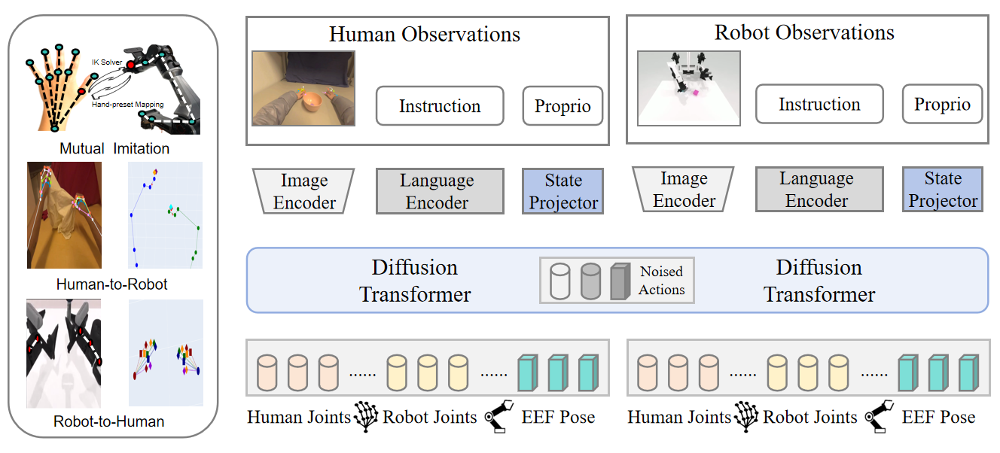
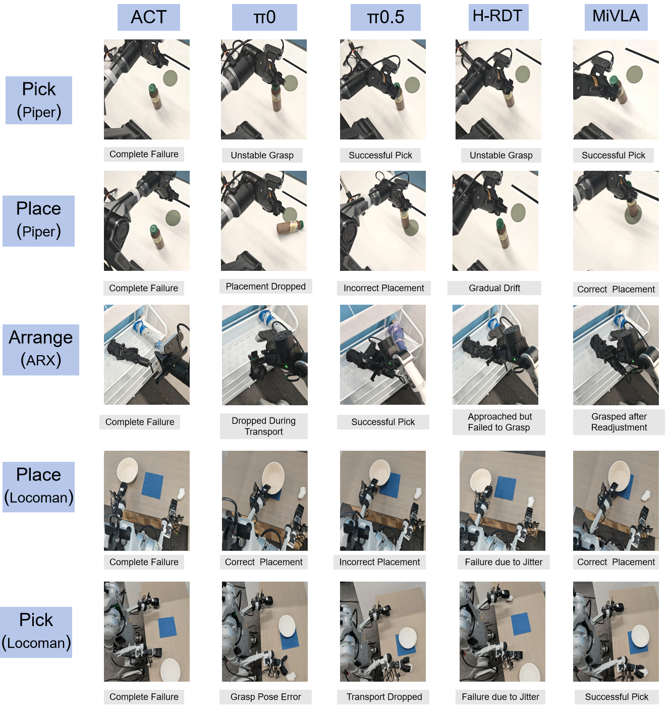
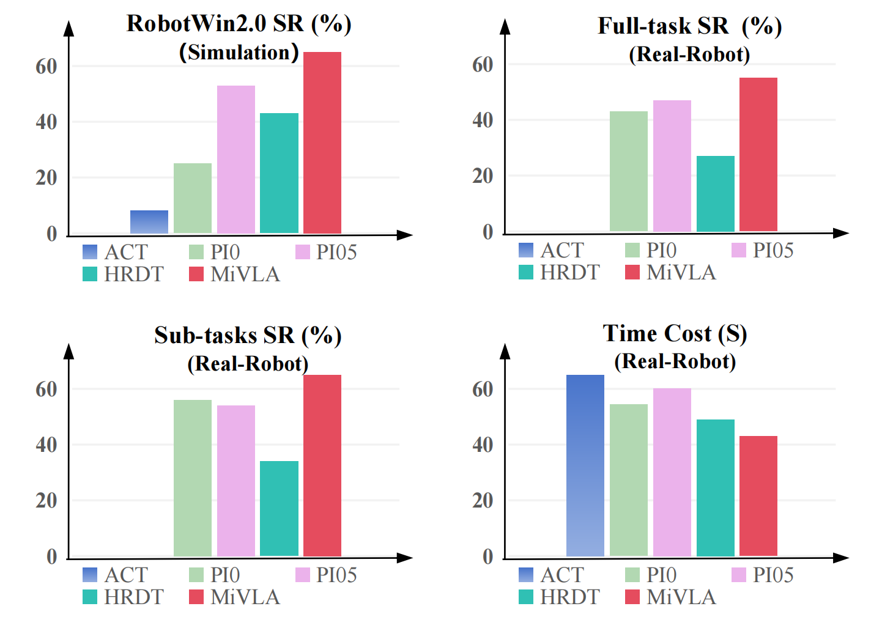

While leveraging abundant human videos and simulated robot data poses a scalable solution to the scarcity of real-world robot data, the generalization capability of existing vision-language-action models (VLAs) remains limited by mismatches in camera views, visual appearance, and embodiment morphologies. To overcome this limitation, we propose MiVLA, a generalizable VLA empowered by human-robot mutual imitation pre-training, which leverages inherent behavioral similarity between human hands and robotic arms to build a foundation of strong behavioral priors for both human actions and robotic control. Specifically, our method utilizes kinematic rules with left/right hand coordinate systems for bidirectional alignment between human and robot action spaces. Given human or simulated robot demonstrations, MiVLA is trained to forecast behavior trajectories for one embodiment, and imitate behaviors for another one unseen in the demonstration. Based on this mutual imitation, it integrates the behavioral fidelity of real-world human data with the manipulative diversity of simulated robot data into a unified model, thereby enhancing the generalization capability for downstream tasks. Extensive experiments conducted on both simulation and real-world platforms with three robots (ARX, PiPer and LocoMan), demonstrate that MiVLA achieves strong improved generalization capability, outperforming state-of-the-art VLAs (e.g., π₀, π₀.₅ and H-RDT) by 25% in simulation, and 14% in real-world robot control tasks.
Observe the performance of MiVLA on three real machine bodies and three different tasks.

Model Architecture Image
Add your architecture diagram toimages/mivla_architecture.png
MiVLA employs a vision-language-action transformer architecture that processes multi-modal inputs through human-robot mutual imitation pre-training. The model consists of:
Bidirectional alignment between human and robot action spaces using kinematic rules with left/right hand coordinate systems
Leverages inherent behavioral similarity between human hands and robotic arms to build strong behavioral priors
Forecasts behavior trajectories for one embodiment while imitating behaviors for another unseen embodiment
Validated on three different robots: ARX, PiPer, and LocoMan across simulation and real-world tasks
Comparison of MiVLA model performance against baseline methods in real-world robotic manipulation tasks, demonstrating superior generalization and adaptation capabilities.


Extensive experiments on ARX, PiPer, and LocoMan robots across simulation and real-world platforms. MiVLA outperforms state-of-the-art VLAs by 25% in simulation and 14% in real-world tasks.
We thank the anonymous reviewers for their valuable feedback. This work was supported by [Grant Information]. We also thank the contributors to the open-source community for their tools and frameworks.